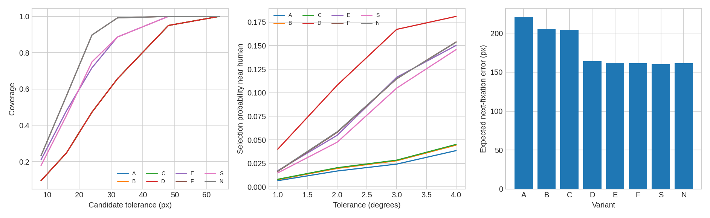
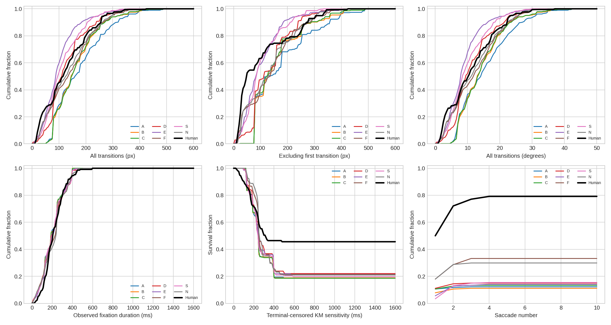

Six new test scenes, 58 human trials, three paired simulation seeds. This is an exploratory mechanism comparison, not a claim of human-equivalent gaze. D was the simpler provisional comparator selected from validation before inspecting these test outcomes. No mechanism or timing parameter was selected again on this test.
Relative to A, the preselected D comparator changes count NSS from 0.099 to 0.676, while post-initial target acquisition is 15.0% versus human 79.2%. Thus improved allocation does not solve target search. Added mechanisms are judged by the individual endpoints and intervals below, not by complexity.
Dynamic F reaches 33.2% target acquisition versus sensor-only S 15.4% and no-persistence N 29.9%. F−N is only +3.3 percentage points with a pointwise interval spanning zero. No endpoint survives the reported Holm correction across its comparison family. These controls do not establish a specific contribution from persistent tracking. D remains the validation-selected simpler comparator, not a test-selected winner.
A original frozen Phase 3 lognormal; B valid stimulus; C target guidance; D area-normalized selection; E adaptive proposals; F coarse multiscale perception + persistent proto-objects. S = E + coarse sensor only; N = F without across-fixation proto persistence. All use the same frozen lognormal timing parameters. Spatial DTW is custom normalized spatial DTW, not MultiMatch or ScanMatch. Means first average seeds, tasks and participants within scenes, then weight the six scenes equally.
| variant | model_target_ever | human_target_ever | count_nss | duration_nss | count_cc | count_sim | count_gain_vs_center_bits | spatial_dtw | model_amplitude_all_px | duration_wasserstein_ms | model_padding_fraction |
|---|---|---|---|---|---|---|---|---|---|---|---|
| A | 0.122 | 0.792 | 0.099 | 0.056 | 0.008 | 0.030 | -5.891 | 0.165 | 176.828 | 104.005 | 0.137 |
| B | 0.111 | 0.792 | 0.122 | 0.054 | 0.009 | 0.031 | -5.905 | 0.150 | 163.535 | 101.961 | 0.000 |
| C | 0.133 | 0.792 | 0.145 | 0.095 | 0.012 | 0.034 | -5.798 | 0.149 | 163.036 | 102.366 | 0.000 |
| D | 0.150 | 0.792 | 0.676 | 0.730 | 0.062 | 0.071 | -4.987 | 0.127 | 127.913 | 103.735 | 0.000 |
| E | 0.140 | 0.792 | 0.275 | 0.224 | 0.040 | 0.058 | -5.004 | 0.127 | 100.793 | 104.020 | 0.000 |
| F | 0.332 | 0.792 | 0.551 | 0.452 | 0.064 | 0.077 | -4.565 | 0.133 | 140.362 | 101.786 | 0.000 |
| N | 0.299 | 0.792 | 0.580 | 0.492 | 0.067 | 0.077 | -4.531 | 0.135 | 135.415 | 99.741 | 0.000 |
| S | 0.154 | 0.792 | 0.251 | 0.190 | 0.031 | 0.050 | -5.248 | 0.126 | 112.113 | 101.243 | 0.000 |
Use the table and paired intervals jointly: improving target acquisition alone does not establish human-like search. Masking is a geometric validity correction. Peripheral evidence can be weak or arrive too late. Adaptive proposals can improve coverage while diluting probability. Dynamic representations are experimental and remain optional; they are not promoted merely because they are more elaborate. The report preserves negative outcomes.
Primary target acquisition excludes the supplied initial fixation. Some starts are already on the annotated target, so both including-initial and initially-off-target results are supplied. Human success in the raw trial does not guarantee a post-initial target-box hit within this reconstructed window.
| variant | initial_human_on_target | model_target_including_initial | human_target_including_initial | model_target_acquisition_initial_off_target | human_target_acquisition_initial_off_target | model_no_post_initial_fixations | model_terminal_censored | model_refixation_rate | human_refixation_rate | model_small_step_fraction | human_small_step_fraction | model_fixation_count | human_fixation_count |
|---|---|---|---|---|---|---|---|---|---|---|---|---|---|
| A | 0.000 | 0.122 | 0.792 | 0.122 | 0.792 | 0.000 | 0.908 | 0.000 | 0.000 | 0.002 | 0.183 | 2.271 | 2.025 |
| B | 0.000 | 0.111 | 0.792 | 0.111 | 0.792 | 0.000 | 0.897 | 0.004 | 0.000 | 0.002 | 0.183 | 2.271 | 2.025 |
| C | 0.000 | 0.133 | 0.792 | 0.133 | 0.792 | 0.000 | 0.892 | 0.004 | 0.000 | 0.002 | 0.183 | 2.271 | 2.025 |
| D | 0.000 | 0.150 | 0.792 | 0.150 | 0.792 | 0.000 | 0.912 | 0.039 | 0.000 | 0.048 | 0.183 | 2.142 | 2.025 |
| E | 0.000 | 0.140 | 0.792 | 0.140 | 0.792 | 0.000 | 0.914 | 0.021 | 0.000 | 0.093 | 0.183 | 2.257 | 2.025 |
| F | 0.000 | 0.332 | 0.792 | 0.332 | 0.792 | 0.000 | 0.936 | 0.004 | 0.000 | 0.121 | 0.183 | 2.126 | 2.025 |
| N | 0.000 | 0.299 | 0.792 | 0.299 | 0.792 | 0.007 | 0.931 | 0.000 | 0.000 | 0.117 | 0.183 | 2.065 | 2.025 |
| S | 0.000 | 0.154 | 0.792 | 0.154 | 0.792 | 0.000 | 0.900 | 0.036 | 0.000 | 0.068 | 0.183 | 2.260 | 2.025 |
Each delta is the first variant minus the second. Higher target acquisition and NSS are favorable; lower DTW, error and padding are favorable. Bootstrap uses 2,000 crossed scene/participant resamples after averaging simulation seeds; intervals are pointwise. Exact scene sign-flip diagnostics and Holm adjustments across all 56 planned endpoint comparisons are supplied, with very low power at six scenes.
| comparison | metric | delta | lower | upper | p | holm_p |
|---|---|---|---|---|---|---|
| B−A | model_target_ever | -0.011 | -0.078 | 0.039 | 1.000 | 1.000 |
| B−A | count_nss | 0.023 | -0.291 | 0.355 | 0.750 | 1.000 |
| B−A | duration_nss | -0.001 | -0.102 | 0.114 | 0.750 | 1.000 |
| B−A | spatial_dtw | -0.015 | -0.041 | 0.003 | 0.500 | 1.000 |
| B−A | model_amplitude_all_px | -13.292 | -38.287 | 7.960 | 0.500 | 1.000 |
| B−A | duration_wasserstein_ms | -2.044 | -6.475 | 0.178 | 0.500 | 1.000 |
| B−A | model_padding_fraction | -0.137 | -0.279 | -0.016 | 0.250 | 1.000 |
| C−B | model_target_ever | 0.022 | 0.000 | 0.083 | 1.000 | 1.000 |
| C−B | count_nss | 0.023 | -0.000 | 0.094 | 0.500 | 1.000 |
| C−B | duration_nss | 0.041 | -0.000 | 0.183 | 0.125 | 1.000 |
| C−B | spatial_dtw | -0.001 | -0.004 | 0.002 | 1.000 | 1.000 |
| C−B | model_amplitude_all_px | -0.499 | -11.883 | 5.800 | 1.000 | 1.000 |
| C−B | duration_wasserstein_ms | 0.405 | -1.152 | 3.397 | 0.750 | 1.000 |
| C−B | model_padding_fraction | 0.000 | 0.000 | 0.000 | 1.000 | 1.000 |
| D−C | model_target_ever | 0.017 | -0.172 | 0.244 | 0.812 | 1.000 |
| D−C | count_nss | 0.530 | -0.343 | 2.105 | 0.531 | 1.000 |
| D−C | duration_nss | 0.634 | -0.350 | 2.349 | 0.531 | 1.000 |
| D−C | spatial_dtw | -0.022 | -0.049 | 0.009 | 0.156 | 1.000 |
| D−C | model_amplitude_all_px | -35.123 | -53.884 | -16.170 | 0.031 | 1.000 |
| D−C | duration_wasserstein_ms | 1.369 | -5.497 | 8.312 | 0.281 | 1.000 |
| D−C | model_padding_fraction | 0.000 | 0.000 | 0.000 | 1.000 | 1.000 |
| E−D | model_target_ever | -0.010 | -0.133 | 0.111 | 0.938 | 1.000 |
| E−D | count_nss | -0.401 | -1.752 | 0.363 | 0.656 | 1.000 |
| E−D | duration_nss | -0.506 | -2.052 | 0.305 | 0.656 | 1.000 |
| E−D | spatial_dtw | 0.000 | -0.017 | 0.017 | 1.000 | 1.000 |
| E−D | model_amplitude_all_px | -27.120 | -42.431 | -14.379 | 0.031 | 1.000 |
| E−D | duration_wasserstein_ms | 0.285 | -8.620 | 9.982 | 1.000 | 1.000 |
| E−D | model_padding_fraction | 0.000 | 0.000 | 0.000 | 1.000 | 1.000 |
| F−E | model_target_ever | 0.192 | 0.031 | 0.367 | 0.062 | 1.000 |
| F−E | count_nss | 0.276 | -0.340 | 0.983 | 0.344 | 1.000 |
| F−E | duration_nss | 0.228 | -0.323 | 0.905 | 0.594 | 1.000 |
| F−E | spatial_dtw | 0.006 | -0.020 | 0.030 | 0.719 | 1.000 |
| F−E | model_amplitude_all_px | 39.569 | 14.927 | 64.494 | 0.031 | 1.000 |
| F−E | duration_wasserstein_ms | -2.234 | -15.842 | 10.852 | 0.656 | 1.000 |
| F−E | model_padding_fraction | 0.000 | 0.000 | 0.000 | 1.000 | 1.000 |
| S−E | model_target_ever | 0.014 | -0.114 | 0.171 | 1.000 | 1.000 |
| S−E | count_nss | -0.023 | -0.503 | 0.588 | 0.906 | 1.000 |
| S−E | duration_nss | -0.034 | -0.459 | 0.483 | 0.875 | 1.000 |
| S−E | spatial_dtw | -0.001 | -0.016 | 0.012 | 0.875 | 1.000 |
| S−E | model_amplitude_all_px | 11.320 | -0.174 | 23.163 | 0.031 | 1.000 |
| S−E | duration_wasserstein_ms | -2.776 | -11.347 | 4.961 | 0.250 | 1.000 |
| S−E | model_padding_fraction | 0.000 | 0.000 | 0.000 | 1.000 | 1.000 |
| F−S | model_target_ever | 0.178 | -0.033 | 0.383 | 0.188 | 1.000 |
| F−S | count_nss | 0.299 | -0.543 | 1.188 | 0.406 | 1.000 |
| F−S | duration_nss | 0.262 | -0.473 | 1.031 | 0.531 | 1.000 |
| F−S | spatial_dtw | 0.007 | -0.017 | 0.031 | 0.562 | 1.000 |
| F−S | model_amplitude_all_px | 28.249 | -1.291 | 55.638 | 0.125 | 1.000 |
| F−S | duration_wasserstein_ms | 0.543 | -9.930 | 11.311 | 0.938 | 1.000 |
| F−S | model_padding_fraction | 0.000 | 0.000 | 0.000 | 1.000 | 1.000 |
| F−N | model_target_ever | 0.033 | -0.017 | 0.125 | 0.500 | 1.000 |
| F−N | count_nss | -0.029 | -0.175 | 0.104 | 0.438 | 1.000 |
| F−N | duration_nss | -0.040 | -0.159 | 0.010 | 0.094 | 1.000 |
| F−N | spatial_dtw | -0.001 | -0.008 | 0.007 | 0.188 | 1.000 |
| F−N | model_amplitude_all_px | 4.946 | -2.896 | 16.451 | 0.375 | 1.000 |
| F−N | duration_wasserstein_ms | 2.045 | -3.758 | 7.915 | 0.500 | 1.000 |
| F−N | model_padding_fraction | 0.000 | 0.000 | 0.000 | 1.000 | 1.000 |
Current gaze and past durations condition perception and memory. Candidates and sampled choice are frozen before the next human coordinate is read. This separates localization coverage from probability allocation and is not autonomous prediction.
| variant | coverage_48 | coverage_deg_2 | nearest_rank_min | nearest_probability | probability_within_deg_2 | expected_error_px | unexplored_region_probability | target_location_brier_proxy |
|---|---|---|---|---|---|---|---|---|
| A | 0.950 | 0.459 | 22.860 | 0.029 | 0.017 | 221.164 | 0.913 | 0.053 |
| B | 0.950 | 0.459 | 19.999 | 0.033 | 0.020 | 205.502 | 0.895 | 0.053 |
| C | 0.950 | 0.459 | 19.758 | 0.034 | 0.020 | 204.529 | 0.896 | 0.051 |
| D | 0.950 | 0.459 | 12.915 | 0.094 | 0.108 | 163.763 | 0.574 | 0.051 |
| E | 1.000 | 0.703 | 37.997 | 0.032 | 0.055 | 161.905 | 0.589 | 0.051 |
| F | 1.000 | 0.859 | 39.511 | 0.028 | 0.058 | 161.590 | 0.529 | 0.047 |
| N | 1.000 | 0.859 | 39.314 | 0.029 | 0.059 | 161.628 | 0.526 | 0.047 |
| S | 1.000 | 0.710 | 35.968 | 0.033 | 0.048 | 160.310 | 0.620 | 0.047 |

Same crossed bootstrap and scene-level sign-flip diagnostics; Holm correction within this separate 32-comparison exploratory prefix family.
| comparison | metric | delta | lower | upper | holm_p |
|---|---|---|---|---|---|
| B−A | nearest_error_px | 0.000 | 0.000 | 0.000 | 1.000 |
| B−A | coverage_deg_2 | 0.000 | 0.000 | 0.000 | 1.000 |
| B−A | probability_within_deg_2 | 0.003 | 0.000 | 0.005 | 1.000 |
| B−A | expected_error_px | -15.662 | -27.149 | -4.956 | 1.000 |
| C−B | nearest_error_px | 0.000 | 0.000 | 0.000 | 1.000 |
| C−B | coverage_deg_2 | 0.000 | 0.000 | 0.000 | 1.000 |
| C−B | probability_within_deg_2 | 0.001 | -0.001 | 0.004 | 1.000 |
| C−B | expected_error_px | -0.974 | -3.301 | 0.261 | 1.000 |
| D−C | nearest_error_px | 0.000 | 0.000 | 0.000 | 1.000 |
| D−C | coverage_deg_2 | 0.000 | 0.000 | 0.000 | 1.000 |
| D−C | probability_within_deg_2 | 0.088 | 0.025 | 0.169 | 1.000 |
| D−C | expected_error_px | -40.766 | -58.417 | -25.687 | 1.000 |
| E−D | nearest_error_px | -8.539 | -13.716 | -3.959 | 1.000 |
| E−D | coverage_deg_2 | 0.244 | 0.081 | 0.439 | 1.000 |
| E−D | probability_within_deg_2 | -0.053 | -0.122 | -0.012 | 1.000 |
| E−D | expected_error_px | -1.858 | -5.646 | 2.752 | 1.000 |
| F−E | nearest_error_px | -2.725 | -6.702 | 0.034 | 1.000 |
| F−E | coverage_deg_2 | 0.156 | 0.013 | 0.347 | 1.000 |
| F−E | probability_within_deg_2 | 0.003 | -0.048 | 0.036 | 1.000 |
| F−E | expected_error_px | -0.315 | -13.839 | 12.155 | 1.000 |
| S−E | nearest_error_px | 0.681 | -0.996 | 2.475 | 1.000 |
| S−E | coverage_deg_2 | 0.007 | -0.097 | 0.122 | 1.000 |
| S−E | probability_within_deg_2 | -0.007 | -0.051 | 0.021 | 1.000 |
| S−E | expected_error_px | -1.596 | -14.190 | 9.862 | 1.000 |
| F−S | nearest_error_px | -3.406 | -7.237 | -0.877 | 1.000 |
| F−S | coverage_deg_2 | 0.148 | 0.028 | 0.324 | 1.000 |
| F−S | probability_within_deg_2 | 0.010 | -0.001 | 0.024 | 1.000 |
| F−S | expected_error_px | 1.281 | -2.014 | 4.616 | 1.000 |
| F−N | nearest_error_px | 0.000 | 0.000 | 0.000 | 1.000 |
| F−N | coverage_deg_2 | 0.000 | 0.000 | 0.000 | 1.000 |
| F−N | probability_within_deg_2 | -0.001 | -0.003 | 0.000 | 1.000 |
| F−N | expected_error_px | -0.037 | -0.368 | 0.112 | 1.000 |
Target-location Brier values compare a capped peripheral relevance signal with coarse binary target-box occupancy; they are a diagnostic proxy, not a validated semantic calibration score. Leave-one-participant-out human count NSS reference: 6.360. It uses the same image and task, excludes the supplied initial gaze, and is not a strict upper bound.

Curves average seeds, tasks, participants and then scenes. Target acquisition curves mean acquired by at most N observed post-initial fixations within the RT-conditioned window, including trials that terminate earlier. They do not predict completion time. Stays are merged; amplitude sensitivity excludes the first transition. Duration CDF includes observed window truncation. KM is a sensitivity analysis treating the terminal human fixation as censored; the source lacks exact gaps and censoring may be informative, so this is not a physiological lifetime estimate.
Conditional duration CRPS (ms, lower is better), six draws per interior human fixation; initial and terminal contexts excluded, original Phase 3 parameters frozen. Changed spatial/perceptual context can change the timing predictions even with identical timing parameters.
| variant | timing_model | crps_ms |
|---|---|---|
| A | accumulator | 67.236 |
| A | accumulator_hold | 61.134 |
| A | heuristic_lognormal | 60.836 |
| B | accumulator | 65.819 |
| B | accumulator_hold | 59.475 |
| B | heuristic_lognormal | 60.836 |
| C | accumulator | 65.145 |
| C | accumulator_hold | 59.273 |
| C | heuristic_lognormal | 60.931 |
| D | accumulator | 66.987 |
| D | accumulator_hold | 59.684 |
| D | heuristic_lognormal | 60.931 |
| E | accumulator | 68.737 |
| E | accumulator_hold | 63.584 |
| E | heuristic_lognormal | 59.779 |
| F | accumulator | 69.771 |
| F | accumulator_hold | 63.744 |
| F | heuristic_lognormal | 61.454 |
| N | accumulator | 69.924 |
| N | accumulator_hold | 63.922 |
| N | heuristic_lognormal | 61.333 |
| S | accumulator | 68.715 |
| S | accumulator_hold | 63.198 |
| S | heuristic_lognormal | 60.778 |
| variant | central_target_seen | target_detection_precision_proxy | target_memory_retention_proxy | early_target_cue | proto_recognized_fraction | proto_merge_events | proto_discard_events | trace_complete |
|---|---|---|---|---|---|---|---|---|
| A | 0.122 | 0.656 | 1.000 | 0.000 | — | 0.000 | 0.000 | 1.000 |
| B | 0.094 | 0.656 | 1.000 | 0.000 | — | 0.000 | 0.000 | 1.000 |
| C | 0.117 | 0.713 | 1.000 | 0.283 | — | 0.000 | 0.000 | 1.000 |
| D | 0.072 | 0.711 | 1.000 | 0.283 | — | 0.000 | 0.000 | 1.000 |
| E | 0.094 | 0.560 | 1.000 | 0.283 | — | 0.000 | 0.000 | 1.000 |
| F | 0.174 | 0.812 | 1.000 | 0.667 | 0.026 | 1.714 | 0.175 | 1.000 |
| N | 0.154 | 0.633 | 1.000 | 0.667 | 0.012 | 1.725 | 0.000 | 1.000 |
| S | 0.099 | 0.750 | 1.000 | 0.667 | — | 0.000 | 0.000 | 1.000 |
Central target recognition is counted only for centrally gated target-class detector evidence overlapping the annotated target box. It is not full object recognition accuracy. Memory retention checks internal target-support persistence after a correct local observation, not human recall. Proto status and confidence are internal state. Full object accuracy, semantic calibration and human memory performance remain unverified because the required annotations and behavioral tests are absent.
Padding was first assessed on earlier exploratory scenes. C, D and E were assessed sequentially on six disjoint new validation scenes using seed 11, before adding optional F. C produced no changed trajectory in that pilot despite sparse late target cues. D improved its pilot target acquisition and count NSS but worsened duration mismatch; E did not improve those spatial endpoints. The first replacement-only localization prototype removed valid anchors and was retired; final E retains them. F is tested with a sensor-only and a no-persistence control. An implementation audit then caught inherited proto-candidate attributes. Revision2 recomputes them at the proto location. Test jobs had begun but no held-out outcome scores had been inspected; corrected F/N validation and test runs supersede stale engineering outputs. This procedural amendment is why fresh-scene results are described as exploratory.
| variant | model_target_ever | count_nss | spatial_dtw | model_amplitude_all_px | duration_wasserstein_ms |
|---|---|---|---|---|---|
| A | 0.000 | -0.150 | 0.203 | 217.651 | 102.677 |
| B | 0.017 | -0.119 | 0.187 | 185.983 | 102.844 |
| C | 0.017 | -0.119 | 0.187 | 185.983 | 102.844 |
| D | 0.283 | 0.272 | 0.136 | 122.458 | 128.823 |
| E | 0.200 | -0.066 | 0.133 | 121.058 | 105.845 |
| F | 0.207 | 0.059 | 0.143 | 167.193 | 103.175 |
| S | 0.050 | -0.078 | 0.168 | 166.312 | 104.676 |
| N | 0.207 | 0.031 | 0.133 | 164.301 | 103.458 |
The laboratory shows actual available/rejected candidates, additive utility components, normalized probabilities, chosen outgoing location, incoming choice, exact-input SHA256 checks, current detections, tentative peripheral evidence, multiscale features, proto changes and core memory before/after each observation. The priority raster is a smoothed display of the logged vector; the vector itself drives sampling. Race timing uses a separately labeled first-passage choice with no invented softmax likelihood. Human next-fixation labels are evaluation-only. Photographs and individual replay records stay in the owner-only internal research site and local workspace, outside the public GitHub repository.
Results and frozen protocol · Per-image results · Participant aggregates · Summary · Effects and intervals · Prefix diagnostics · Timing · Dataset